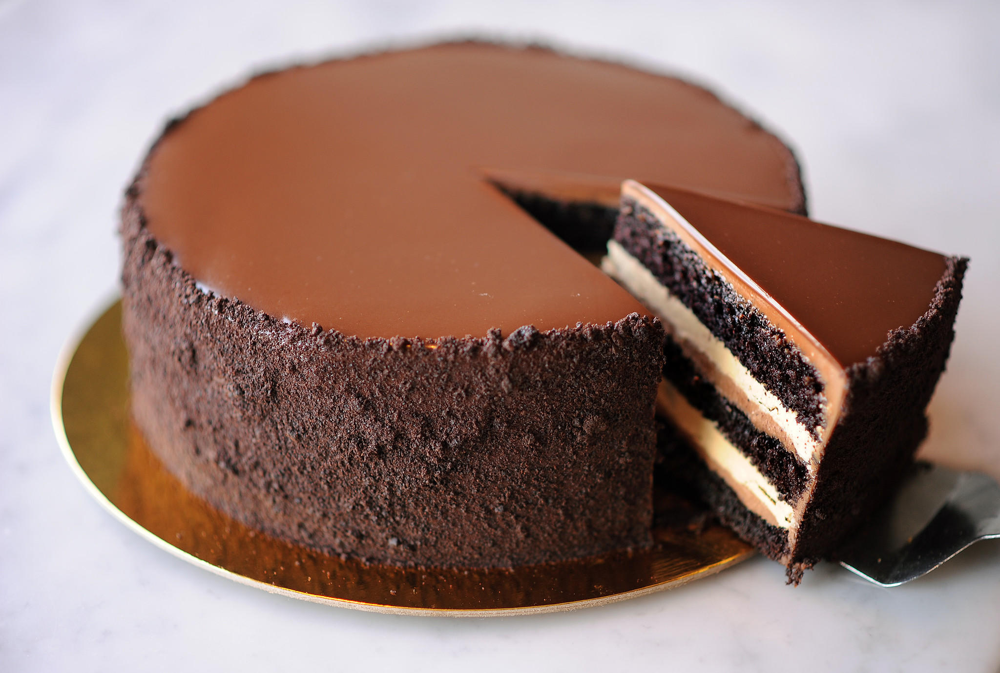
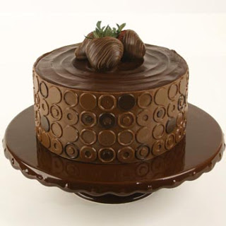

One Bowl Chocolate Cake III


"This is a rich and moist chocolate cake. It only takes a few minutes
to prepare the batter. Frost with your favorite chocolate frosting"
Ingredients
prep time:1 hour
24 servings
- 2 cups white sugar
- 1 3/4 cups all-pupose flour
- 3/4cups all-pupose cocoa powder
- 1 1/2 teaspoons baking soda
- 1 teaspoon salt
- 2 eggs
- 1 cup milk
- 1/2 cup vegetable oil
- 2 teaspoons vanilla extract
- 1 cup boiling water
Directions
- Preheat oven to 350 degrees F (175 degreess C). Grease and flour
two nine inch round pans.
- In a large bowl, stir together the sugar, flour, cocoa, baking powder,
baking soda and salt. Add the eggs, milk, oil and vanilla. Mix for
2 minutes on medium speed of mixer. Stir in the boiling water last.
Batter will be thin. Pour evenly into the prepared pans.
- Bake 30 to 35 minutes in the preheated oven, until the cake tests
done with a toothpick. Cool in the pans for 10 minutes, then remove
to a wire rack to cool completely.
Footnotes:
Tip
Aluminum foil cna be used to keep food mist, cook it evenly,
and make clean-up easier.
Taken from Allrecipes